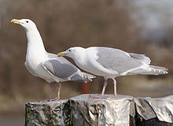
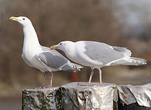

| Glaucous-winged Gull | |
|---|---|
|  | |
| Conservation status | |
| Binomial name | |
| Larus glaucescens (Naumann, 1840, North America) |
| Glaucous-winged Gull | |
|---|---|
|  | |
| Conservation status | |
| Binomial name | |
| Larus glaucescens (Naumann, 1840, North America) |
The Glaucous-winged Gull, Larus glaucescens, is a large, white-headed gull residing from the western coast of Alaska to the coast of Washington. It also breeds on the northwest coast of Alaska. During non-breeding seasons they can be found along the coast of California. It is a close relative of the Western Gull and frequently hybridizes with it, resulting in identification problems—particularly in the Puget Sound area. Glaucous-winged Gulls are thought to live about 15 years. One individual, notable because he had only one leg, lived at least 30.
The Glaucous-winged Gull is rarely found far from saltwater. It is a large bird, measuring 24 to 27 in. (61-69 cm.) with a white head, neck, breast, and belly, a white tail, and pearly-gray wings and back. The term glaucous describes its colouration. The ends of its wings are white-tipped. Its legs are pink and the beak is yellow with a red subterminal spot. The forehead is somewhat flat. During the winter, the head and nape appears dusky, and the subterminal spot becomes dark. Young birds are brown or gray with black beaks, and take four years to reach full plumage.
The Glaucous-winged Gull nests in the summer, and each pair produces two or three chicks which fledge at six weeks.
It feeds along the coast, scavenging for dead or weak animals, fish, mussels and scraps. Its cry is a low-pitched "kak-kak-kak" or "wow", or a more high-pitched wailing.
It is an exceptionally rare vagrant to the Western Palearctic region, with records from Morocco, the Canary Islands and, most recently, from Britain in the winters of 2006/2007 and 2008/2009. The 2008/2009 record was from Saltholme Pools, Cleveland, and attracted hundreds of twitchers.

{kind=link}
{kind=link}